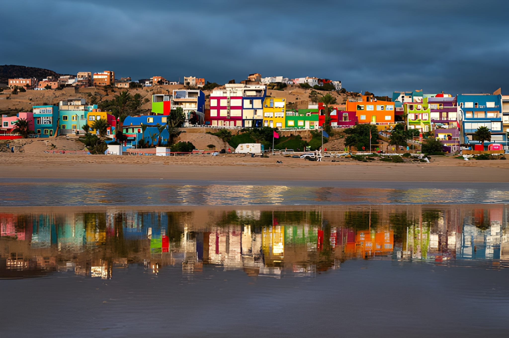
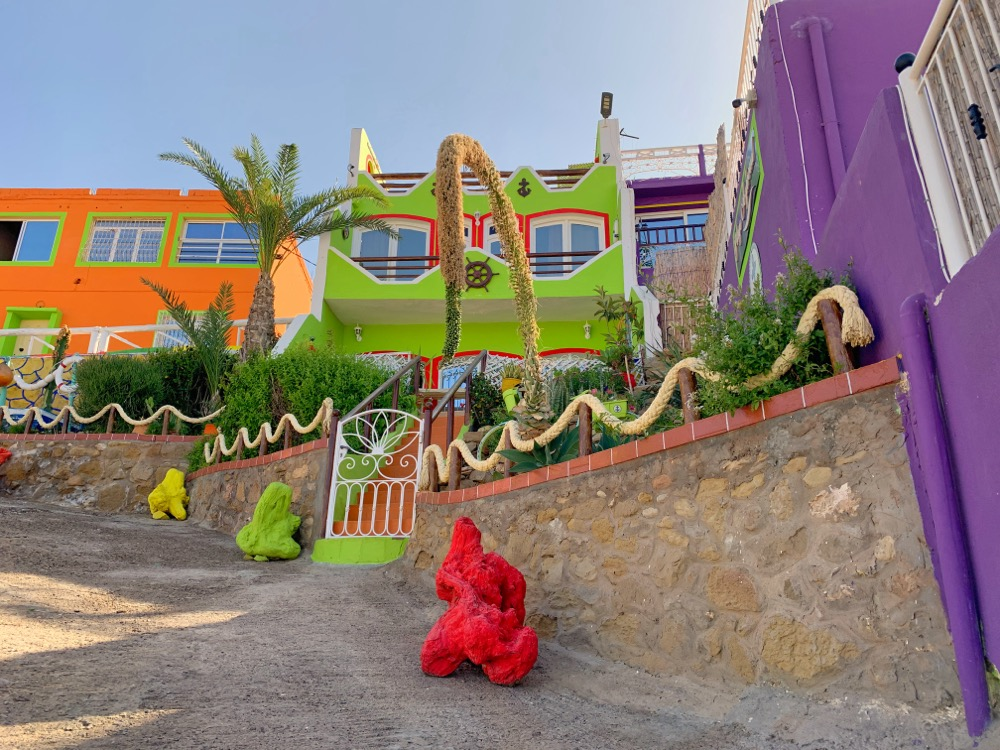

Where Is the Rainbow Village in Agadir?
Located just 32 kilometers (20 miles) north of Agadir along Morocco's stunning Atlantic coastline, Aghroud (also spelled Aghrod locally) sits near the famous Tamri Beach. This vibrant fishing village isn't marked on most tourist maps, making it one of Agadir's best-kept secrets.
The village is easily accessible by car along National Route 1, the scenic coastal road connecting Agadir to Essaouira. The drive takes approximately 45 minutes from Agadir's city center, offering breathtaking views of the Atlantic Ocean along the way.
What makes Aghroud special isn't just its location—it's the transformation that happened here. Each building proudly displays its own unique color scheme, creating a kaleidoscope of blues (representing the Atlantic Ocean), greens (nature and agriculture), golden yellows (the sun), and fiery reds (community warmth). This colorful village represents the real pulse of coastal Moroccan life, far from the resort hotels and tourist crowds.

The Story Behind Aghroud's Rainbow Transformation
Aghroud's transformation from a traditional fishing village into Morocco's Rainbow Village didn't happen overnight. This wasn't a government project or tourist board initiative—it was a grassroots movement born from community pride and artistic vision.
The story begins with local artists who saw potential in their village's blank walls. They started painting a few houses, choosing colors that reflected the natural beauty surrounding Aghroud: blues for the Atlantic Ocean that feeds the fishing community, greens for the nearby nature and agriculture, golden yellows for the sun that blesses the coast, and fiery reds for the warmth of the community.
As one resident, Ali Amerkouk, explains: "We wanted to show that our village matters. We may be a small fishing community, but we have something special—artistic spirit and community pride. When local artists painted the first few houses, other families saw the beauty and wanted to do the same. Now our village looks like a living rainbow."
From Fishing Village to Artistic Destination
What started as a few painted houses has evolved into something extraordinary. Local artists have created murals and street art throughout Aghroud, turning blank walls into canvases that tell stories of Moroccan culture, Berber heritage, and coastal life.
The transformation has brought real economic benefits to the community. Today, approximately 30,000 visitors annually come to see the Rainbow Village, leading to a 40% increase in tourism revenue that has created numerous job opportunities for local residents. This isn't just art for art's sake—it's a sustainable model of community-driven tourism that benefits everyone.
What to Expect: Daily Life in Aghroud Rainbow Village
Unlike typical tourist attractions, Aghroud isn't a museum or theme park—it's a living, breathing fishing community where people work, play, and raise their families. When you visit, you're stepping into real Moroccan coastal life. Here's what makes this experience authentic:
Local Markets (Souks) and Daily Commerce
Wander through the colorful streets and you'll discover small local markets where residents shop for fresh produce, bread, and daily essentials. These aren't tourist markets—vendors offer real Moroccan prices for real Moroccan products. You'll see fishermen selling their morning catch, farmers displaying fresh vegetables, and local bakers offering traditional bread still warm from the oven.
Community Tea Houses: The Heart of Social Life
The teahouses (called "cafés" locally) are where Aghroud's social life unfolds. Men gather to discuss politics, share news, and play games over sweet mint tea. Women meet to exchange recipes, share stories, and build community connections. These aren't polished tourist cafés with English menus—they're authentic social hubs where you can witness genuine Moroccan hospitality and daily life.
Children Playing in Colorful Streets
One of the most heartwarming sights in Aghroud is watching children play in the vibrant streets. Soccer games break out spontaneously between the painted houses, kids chase each other through narrow alleys, and the neighborhood pulses with youthful energy. The sense of community safety is palpable—everyone watches out for everyone else's children, creating an environment where families thrive.
Artisan Workshops: Traditional Crafts Alive
Hidden within the Rainbow Village are small artisan workshops where local craftspeople create traditional pottery, leather goods, and textiles. Unlike commercial tourist shops, these workshops offer genuine handmade products and the rare opportunity to watch master craftspeople at work. Purchasing from these artisans directly supports the local economy and preserves traditional Moroccan craftsmanship.

How to Visit Aghroud Rainbow Village Responsibly
Remember: Aghroud is a residential community, not a tourist attraction. The people you'll meet aren't performers—they're families, fishermen, artisans, and shopkeepers going about their daily lives. Visiting with respect and cultural sensitivity ensures that tourism benefits the community while preserving its authentic character.
✅ Essential Guidelines for Responsible Visitors
- Visit with a local guide: A knowledgeable guide helps you interact appropriately with residents, understand cultural norms, and discover the stories behind the colors
- Always ask permission before photographing: Whether it's people, homes, or private spaces, consent is essential. Many residents are happy to be photographed, but always ask first
- Support the local economy: Purchase from local vendors, artisans, and cafés. Your spending directly benefits families in the community
- Learn basic greetings: A few words in Arabic ("salam" for hello, "shukran" for thank you) or Berber go a long way in showing respect
- Dress modestly: Respect local cultural norms by covering shoulders and knees, especially when entering homes or religious spaces
- Be mindful of timing: Avoid visiting during prayer times (especially Friday midday prayers) or family meal times
- Leave no trace: Take only photos, leave only positive impressions. Don't litter or damage the colorful buildings
❌ What Not to Do in Aghroud
- Don't enter private spaces: Yards, homes, and private areas are off-limits unless explicitly invited
- Don't treat residents as attractions: These are real people living real lives. Be respectful and genuine in your interactions
- Don't haggle aggressively: These are local shops with fair prices, not tourist traps. If you must negotiate, do so respectfully
- Don't photograph women without permission: Cultural sensitivity is crucial. Always ask before taking photos of people, especially women
- Don't disrupt daily life: Be quiet near homes, don't block pathways, and be aware of your impact on the community
The Meaning Behind Aghroud's Colors: Stories from the Rainbow Village
Every painted house in Aghroud tells a story. During our tours, local guides share these personal narratives that reveal the deeper meaning behind the colors:
Blue Houses: The Ocean's Legacy
Blue houses typically belong to families with deep connections to fishing and the sea. As one resident explained: "Our grandfather was a fisherman, and his father before him. Blue reminds us of the Atlantic Ocean that has fed our family for generations. It's not just a color—it's our heritage." These families often display fishing nets, boat models, or ocean-themed decorations, creating a visual connection to their maritime traditions.
Orange and Red Homes: Hospitality and Warmth
Orange and red homes signal families known for their warmth and hospitality. Many of these families love hosting guests, sharing mint tea, and welcoming visitors into their community. As the owner of a bright orange house told us: "Our door is always open. In Moroccan culture, hospitality is everything. The orange color reflects the warmth we feel for our neighbors and guests."
Green Dwellings: Connection to Nature
Green houses reflect a deep connection to nature and agriculture. Several families in Aghroud maintain small gardens, grow vegetables, or have roots in farming villages outside Agadir. The green represents their relationship with the land, agriculture, and the natural environment that surrounds the village.
Purple and Violet: The New Generation
Purple and violet houses are often the most recent additions, painted by younger residents who wanted something unique and modern. As one young couple explained: "We wanted our house to stand out. Purple is rare in Morocco, and it represents our generation's creativity and willingness to try something new while respecting our traditions." These vibrant colors symbolize the village's evolution and the younger generation's contribution to Aghroud's transformation.
Experience Aghroud Rainbow Village with a Local Guide
While Aghroud is accessible independently, visiting with a local guide transforms your experience from sightseeing into genuine cultural immersion. Our Agadir City & Local Life Tour takes you beyond the colorful facades to discover the stories, people, and traditions that make Aghroud special.
This isn't your typical bus tour with scripted commentary. It's a curated journey into the heart of real Moroccan coastal life, led by guides who grew up in the region and understand both the community and the cultural nuances that make respectful tourism possible.
Discover Aghroud Rainbow Village
Join our expert local guides for an authentic journey into Morocco's most colorful fishing village. Hotel pickup, cultural insights, and respectful tourism guaranteed. Small groups, big experiences.
Book Your Rainbow Village Tour →What's Included in Your Aghroud Rainbow Village Tour
- ✅ Comfortable transportation: Hotel pickup and drop-off in air-conditioned vehicles from Agadir
- ✅ Expert local guide: Fluent in Arabic, Berber, French, and English, with deep knowledge of Aghroud's history and community
- ✅ Respectful village access: Visit Aghroud with proper permissions and cultural sensitivity
- ✅ Authentic mint tea experience: Enjoy traditional Moroccan tea at a local café, not a tourist spot
- ✅ Market exploration: Discover local markets where residents shop daily, with opportunities to support local vendors
- ✅ Cultural context: Learn about Agadir's neighborhoods, coastal life, and the story behind the Rainbow Village transformation
- ✅ Small group experience: Maximum 8 people per tour for intimate, personalized interactions
- ✅ Community connections: Opportunity to meet and interact with local families when welcomed (always respectful and consensual)
- ✅ Photography guidance: Learn the best spots for photos while respecting residents' privacy
Why Aghroud Rainbow Village Matters: More Than Just Colorful Houses
Aghroud represents something powerful in Moroccan society: the right of coastal communities to beauty, pride, and self-expression. This isn't just a painted village—it's a testament to what happens when local artists and residents collaborate to create something extraordinary from their fishing village heritage.
For travelers willing to venture beyond Agadir's beach resorts, Aghroud offers something increasingly rare: authentic connection with real coastal Moroccan life. You won't find large souvenir shops, tourist traps, or staged experiences. Instead, you'll discover genuine hospitality, colorful creativity, traditional fishing activities, and a community that transformed itself into a vibrant destination while staying true to its coastal roots.
The village has become more than painted buildings—it's a symbol of resilience, community spirit, and the Moroccan value of making life beautiful. Since its artistic transformation began, Aghroud has welcomed 30,000 annual visitors and seen a 40% increase in tourism revenue, creating jobs and opportunities for local families. It's proof that when communities work together, even a small fishing village can become a globally-recognized destination that benefits everyone.
Planning Your Visit to Aghroud Rainbow Village
To make the most of your visit to Aghroud, here's everything you need to know:
Best Time to Visit Aghroud
Morning hours (9 AM to 12 PM) offer the best light for photography and the most active community life. You'll see fishermen returning with their catch, markets bustling with activity, and children heading to school. Late afternoon (4 PM to 6 PM) provides golden hour lighting that makes the colorful houses glow, plus you'll witness the community coming together as the day winds down.
How Long to Spend in Aghroud
A respectful visit typically takes 2-3 hours, including time for mint tea at a local café, market browsing, photography, and conversation with residents. Rushing through defeats the purpose—Aghroud is meant to be experienced slowly, allowing you to absorb the atmosphere and connect with the community.
Getting to Aghroud from Agadir
The village is located 32 kilometers north of Agadir along National Route 1. By car, the drive takes approximately 45 minutes. While you can drive independently, we strongly recommend visiting with a local guide who can facilitate respectful interactions and share the stories behind the colors.
What to Bring
Wear comfortable walking shoes (the area is mostly flat but involves walking on uneven surfaces). Bring water, especially in summer months when temperatures can be high. A camera is essential for capturing the vibrant colors, but remember to always ask permission before photographing people.
Photography Tips for Aghroud
The colorful streets are perfect for photography, but always ask permission before photographing people. Respect privacy and dignity. The best photos come from building relationships first—when residents see you're respectful, they're often happy to be photographed. Golden hour (late afternoon) provides the most stunning light for capturing the vibrant colors.
Frequently Asked Questions About Aghroud Rainbow Village
Conclusion: Discover Agadir's True Colors at Aghroud Rainbow Village
Agadir is more than beautiful beaches and resort hotels. Just 32 kilometers north along Morocco's stunning Atlantic coastline lies a world of authentic coastal life, community spirit, and vibrant artistic culture. Aghroud Rainbow Village represents this hidden gem—a place where local fishing families and artists collaborated to transform their village into a celebration of color, creativity, and coastal community pride.
Visiting Aghroud isn't just about seeing colorful houses against the backdrop of the Atlantic Ocean. It's about understanding real coastal Moroccan life, connecting with fishing families (when welcomed), and witnessing how a small fishing village transformed itself through art while maintaining its traditional character. It's about tourism that respects, educates, and supports—not just photographs and moves on.
If you're the kind of traveler who seeks authentic experiences over staged attractions, Aghroud awaits. This village on the coast between Agadir and Essaouira offers a unique glimpse into coastal Moroccan culture, where the sounds of ocean waves meet the vibrant colors of community pride.
Ready to explore beyond Agadir's beaches? Book your Aghroud Rainbow Village experience today and discover Morocco's most colorful coastal secret. Join us on the Agadir City & Local Life Tour for an authentic journey into this remarkable fishing village that proves when communities work together, even small villages can create something extraordinary.
Experience the Rainbow Village. Discover the stories. Connect with the community. See Agadir's true colors.